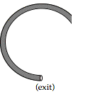
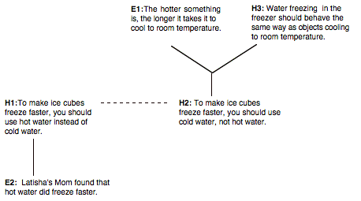
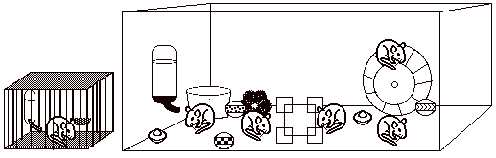

In this section, we'll talk more about the need for alternative hypotheses, generating arguments based on a given (scientific or everyday) controversy, and common "biases" in reasoning.
It's not always easy to come up with more than one hypothesis in a situation. People often get "stuck" and can only come up with one hypothesis (and many times they can't come up with any plausible hypotheses!) . Nevertheless, most people would agree that it is good to have more than one alternative to consider in a given situation. Why? For one reason, considering multiple hypotheses can help you overcome confirmation bias. Confirmation bias is when you focus on trying to prove that your favorite hypothesis (or set of hypotheses) is correct, and don't try to see what could be wrong with it (or them). In other words, it's when you don't try to critique or disconfirm your hypotheses.
Why is it important to disconfirm your hypotheses? Because no matter how much evidence you see that agrees with your hypothesis, there are other hypotheses that could agree with the same evidence. So if you find a lot of evidence that supports a certain hypothesis, that's great and the hypothesis might very well be true. But, some other hypothesis might be true instead. Let's look at an example:
Four people who ate in the school cafeteria got sick. Patricia thinks it must have been the meatloaf that made them sick. She asks each of the four whether or not they ate meatloaf. They all said "yes" so Patricia decides she must have been right. She tells the principal that everyone who ate the meatloaf will have to go to the hospital.
Here is a case in which Patricia has a hypothesis that is consistent with the data. She may be right—it may very well be the meatloaf. But can we be sure?. If you were the principal, would you send everyone who ate the meatloaf to the hospital? How would you decide if Patricia were right? Consider the following:
Christopher doesn't think the meatloaf was the problem. He suspects the mashed potatoes were the problem. So he asks the four people who got sick whether they had mashed potatoes. They all say yes. So Christopher goes to the principal and tells her that everyone who ate mashed potatoes should be sent to the hospital.
The problem that the principal faces is that there are (at least) two hypotheses that are consistent with the evidence. What can the principal do to learn more about what might have caused the illness? The principal decides to try to disconfirm the hypotheses:
The principal asks some other students, who ate at the same time but didn't get sick, if they had eaten the meatloaf or potatoes. She finds that many other people ate both the meatloaf and mashed potatoes but didn't get sick!
The principal found out that both Patricia and Christopher were wrong, by trying to disconfirm their hypotheses (and succeeding!). What do scientists do if all the hypotheses are disconfirmed? They think of more possibilities! The tough part is that there are always more hypotheses to think up. So scientists try to think up as many plausible, reasonable hypotheses as they can early on. That makes it more likely that, when they seek disconfirmation and eliminate hypotheses, the correct one will be left standing:
The principal decides that before she sends anyone to the hospital, she should think up as many possibilities as she can for what caused the students to get sick. The illness could have come from the butter, the ketchup, the chocolate pudding, or anything else the four sick students ate. Then she can check to see if other people got sick from any of those foods.
How do you decide if you have enough hypotheses? In our case, the principal did think up lots of alternative hypotheses. But is the correct one there? Perhaps the students are ill because of something they ate at the football game the night before, or maybe even because they are all friends with the same person and caught a flu from him. There is no easy way to know when you have enough hypotheses to investigate. This is one reason that many scientists study the same questions. You have to use your best guesses about what is likely in order to choose which hypotheses to look into. The principal didn't, for instance, investigate space aliens as a possible reason that the four students were sick—nor would we want her to!
The moral of the story is: You can only be sure something is wrong, never that something is completely right. Another hypothesis might be the true one, and your best guess might be false or incomplete—you just haven't seen enough evidence to be able to know for sure. That's why it's best to come up with as many hypotheses as you can right in the beginning, then work hard to disprove each of them. If you run out of hypotheses because you've disproved all of the ones you have, it's back to the drawing board to come up with new possible explanations. However, if exactly one hypothesis or theory remains standing and all its competitors are disproven, then it's likely that hypothesis or theory is close to the truth.
Consider the following situation: (Top view)
| A ball is rolling quickly, counter-clockwise, through a tube that is lying flat on a table. The tube is bent into a C shape, as shown. |  |
Draw as many plausible, alternative paths that you or someone else might think the ball could shoot out.
One of the first steps to solving any problem is gathering all the relevant information. The same applies to considering scientific problems. Remember back to Unit 1 where you diagrammed the following situation:
Mike is an average student (C average). He is taking a physics class, in which he has turned in the homeworks, which are usually about half correct. His best friend John is also in the class. John is an excellent student, who is very diligent with his studies. John speaks out in class, but Mike does not. Both John and Mike received As on their midterms. The teacher thinks that Mike may have cheated on the exam, since Mike was sitting next to John.
You diagrammed this problem by writing down the hypotheses and evidence that you were told about in the text, for instance that "Mike is usually half correct" or that "John is an excellent student" or hypotheses like "Mike cheated off John on the exam" or "Mike was honest on the exam." Some of those ideas were not actually mentioned in the text: for instance, the hypothesis that "Mike was honest on the exam" was not specifically mentioned anywhere in the text. But one could infer it, since it is the obvious alternative to the teacher's idea that Mike cheated.
Everyday situations don't come with texts that describe all the relevant information. Scientific situations don't, either. Often, the amount that is implicit or implied is much larger than the amount that is explicitly discussed. Learning to notice which things are implied is a very important part of understanding a situation. Here are two different viewpoints about a common situation: freezing ice cubes.
Latisha's Mom says that to make ice cubes freeze faster, you should use hot water instead of cold water in the ice cube tray. She has been doing this for many years, and although she didn't believe it when she first heard it, Latisha's Mom tried it out several times and the hot water did freeze faster.
Latisha learned in science class that it takes longer for hot things to cool to room temperature than it takes for warm things which are closer to room temperature.
How would you diagram this situation? There are a lot of important ideas that are left unmentioned. For instance, what might Latisha's hypothesis be, regarding ice cubes? Why would she think that? How does what she knows about objects cooling to room temperature tell her anything about freezing water in the freezer? You would have to say what hypotheses, everyday evidence, and common facts (another kind of evidence, really) Latisha and her Mom might be using to think about the situation.
Here is such a possible diagram:

Notice how Latisha used her knowledge about a similar situation and her belief that water in the freezer should behave the same way. This is a simple analogy, and analogies are often quite useful.
As you can see, Latisha's hypothesis H2 has a good point that is jointly explained by evidence E1 and hypothesis H3. But she doesn't have any direct evidence about ice cubes. Latisha's Mom does have some direct evidence (E2). But she doesn't have an explanation for her hypothesis H1. Latisha has a really hard time believing her Mom. Latisha could do a number of things in this situation. She could try it out for herself. She could look in books or ask her science teacher if there were some reason objects cooling to room temperature would be different than the freezing ice cubes. Instead, she does something many scientists do: She questions how good her Mom's evidence is.
Latisha adds another idea to her graph of the argument. "Mom doesn't measure carefully."
How do you feel about this argument—is Latisha or her Mom right? What would it take to convince you of the other viewpoint?
As it turns out, hot water does freeze faster that cold water. One explanation is that, since more of the hot water evaporates, there is less water to freeze; so it takes less time to freeze than the (eventually more massive) cold water. But that's just one hypothesis. Perhaps you can think of alternate hypotheses that explain how the hot water actually freezes faster, and how you might test these hypotheses. In any case, having an explanation for why a surprising piece of evidence is true makes a big difference in how easy it is to believe the evidence. For example, having an explanation of why the hot water freezes faster might make Latisha not question her Mom's measurements. Without a good explanation, she might have just rejected her Mom's experience.
Considerthe following passage:
A UC Berkeley researcher believed that interesting, educational experiences in early life lead to larger brains. She found that rats raised alone in the empty cages had smaller brains than the rats raised together in the interesting environment. Based on this experiment, she concluded that children who have interesting, educational experiences in preschools will grow up to be more intelligent adults than children who do not attend preschool.
A preschool teacher disagreed with the researcher. She said that the rat experiment could not be used to explain the advantages of attending preschool.

Listthe hypotheses mentioned in the text. Label them H1, H2, H3, etc.....:
List the evidence mentioned in the text. Label them E1, E2, E3, etc....:
Rate how strongly you believe each of the statements that you wrote above, on a scale from 1 (completely disbelieve/reject) to 9 (completely believe/accept). (You can write the ratings to the right of the statements.)
List (and label) any other plausible hypotheses, not mentioned in the text.
List (and label) any other evidence that comes to mind.
What statements explain what other statements? (You don't have to write the statements out. You can use the labels to say things like, "H5 explains E10")
What statements contradict what other statements? (You don't have to write the statements out. You can use the labels to say things like, "H1 contradicts H4")
Revise your ratings if you want, by writing your new rating to the right of your old rating. (Don't scratch your old ratings out!)
Earlier we mentioned confirmation bias, which happens when you focus only on trying to confirm your favorite hypotheses and don't try to disconfirm them. In the cafeteria example above, Patricia and Christopher showed some confirmation bias, because unlike the principal, they didn't ask questions of students who didn'tget sick. It's not irrational to try to confirm a hypothesis--when scientists come up with a new hypothesis, sometimes they focus first on confirming it, and later they try to disconfirm it. But neglecting disconfirmation overall can lead you to accept a hypothesis that might be false or incomplete, as we showed in the cafeteria example. (Since confirmation bias is common, we don't need to worry as much about neglecting confirmation!) The moral of the story is: try to seek a balance between confirmation and disconfirmation.
Two other common biases have to do with the order in which hypotheses and evidence are considered or gathered. For example, sometimes people tend to cling to previous information (e.g., their original beliefs) and ignore or discount new information. This is sometimes called a primacy bias (or intransigence ). Being cautiously objective and thinking up plausible alternate hypotheses usually helps to reduce primacy bias, as does being objective< about the alternatives and trying to confirm and disconfirm all plausible hypotheses. Consider the follow example:
Before the principal disconfirmed Patricia's and Christopher's hypotheses about what was making the students sick, Christopher went to Patricia and told her that he thought the mashed potatoes, not the meatloaf, were the problem. He told her that he asked four of the sick students whether they had mashed potatoes, and they all said yes. Patricia thought about it a while, and said that her hypothesis could be wrong, but she still thought that it was better than Christopher's. She said that maybe the meatloaf was still the problem, and maybe the people Christopher talked to ate the meatloaf, too.
Here is a case where an alternative hypothesis makes Patricia lose some faith in her initial hypothesis, but she still doesn't want to recognize Christopher's hypothesis as an equally plausible alternative. How would you convince Patricia that at this point, Christopher's hypothesis is just as plausible as hers?
Christopher told Patricia that he thought that his hypothesis was just as plausible as hers, since the people that Patricia talked to might just as well have eaten the mashed potatoes too. He said that maybe she thought her hypothesis was better just because she considered that one first and wanted to be right, but both hypotheses were equally plausible.
Christopher is trying to get Patricia to be more objective about the two hypotheses. Viewing hypotheses merely as "objects of reasoning" that is, trying to not favor beliefs in which you have a vested interest, can help to reduce primacy bias. While it might be nice if your pet beliefs are "right" in the long run it's usually more interesting and useful to try to figure out which hypotheses best explain the situation.
The principal told Patricia that several students who didn't get sick had eaten the meatloaf and mashed potatoes. Patricia found Christopher and told him what the principal said, and that she now agreed that both of their hypotheses had been equally plausible, even though they were both wrong.
Here we see that, as a result of objectively considering and testing both hypotheses (and disconfirming both), Patricia comes to see that both hypotheses were equally plausible. Exercising caution, thinking up and objectively considering plausible alternate hypotheses, and trying to confirm and disconfirm the hypotheses will also probably help you reduce primacy (and confirmation) bias, and increase your chances of eliminating highly unlikely hypotheses.
At the other extreme, recency bias is the tendency to be more swayed by recent information and to discount previous findings. For example, the previous example could have gone this way instead:
Before the principal disconfirmed Patricia's and Christopher's hypotheses about what was making the students sick, Patricia went to Christopher and told him that she thought the meatloaf, not the mashed potatoes, was the problem. She told him that she asked four of the sick students whether they had meatloaf, and they all said yes. Christopher thought about it a while, and said that her hypothesis was probably better than his.
Here is a case where Christopher too quickly accepts an alternative hypothesis. How could Patricia convince Christopher at this point that his hypothesis is just as plausible as hers?
Patricia told Christopher that she thought his hypothesis was just as plausible as hers. She had asked four people, and he had asked four people and both hypotheses had pretty much the same amount of good evidence. Patricia also told Christopher that since neither of them have any counter–examples, like someone who's fine who had meatloaf and/or mashed potatoes, they are probably equally likely to be wrong, but you can't tell. (The principal later showed this with counter-examples.) Christopher said that he saw her point, and that they might even both be right; it could be some strange combination of meatloaf and potatoes!
Here we see that laying out the plausible alternatives explicitly < all at once, and cautiously and objectively considering these alternatives, can help reduce recency bias (as well as the other biases we've mentioned).
Sometimes when you try to confirm or disconfirm a hypothesis, what you discover may lead you to change your mind about things. You might decide on one or more of the following things:
But it's not always clear how to form or change your opinion about a hypothesis or piece of evidence, especially when there are several plausible hypotheses and the situation or argument is complex. Here are some strategies you can use to help yourself:
Consider the following historical example:
In 1915, Alfred Wegener proposed his theory of "continental drift." He claimed that continents slowly drift over the earth's surface, fracturing and re-uniting. He said that this drifting would explain the migration of some mammals, and that the forces generated from continental collisions could explain how mountains developed.
Wegener's contemporaries disagreed with him, claiming that each continent's location is fixed. They argued that the earth, once hot, has been cooling and contracting, and that the compressive forces generated from these contractions could have created mountains. Also, they said that Wegener did not offer a compelling explanation of what force(s) would cause the continents to move, or drift, like he proposed. Most scientists held this "rigid earth" theory until the 1960's, but now Wegener's theory is the established view.
List the hypotheses mentioned in the text. Label them H1, H2, H3, etc.....:
Listthe evidence mentioned in the text. Label them E1, E2, E3, etc....:
Rate how strongly you believe each of the statements that you wrote above, on a scale from 1 (completely disbelieve/reject) to 9 (completely believe/accept).
List (and label) any other plausible hypotheses, not mentioned in the text.
List (and label) any other evidence that comes to mind.
What statements explain what other statements?
What statements contradict what other statements?
Revise your ratings if you want. Write your new rating to the right of your old.
What bias or kind of of biases might explain why Wegener's peers discounted his theory? What else might Wegener have done to try to convince his peers?